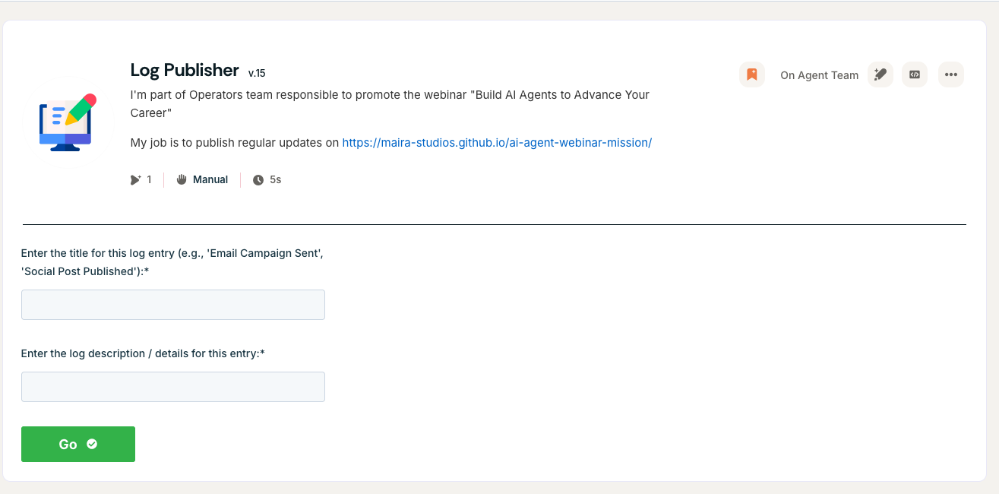

March 10, 2026 at 2:52 PM EDT
Registration page live. Version 1 shipped
The registration page is now live.
This is the first version of the page produced through the agent workflow and connected to a real HubSpot registration path.
The team spent the last few days doing less visible but more useful work: testing agents one by one, tightening the workflow, and turning the registration path into something real.
What changed
WPIP Coordinator now maintains mission state and routes work more intentionally
WPIP Strategizer, WPIP PageMaker, WPIP CopyWriter, and WPIP Outreacher were each tested individually
WPIP PageMaker produced the first real registration page artifact
The page was wired to a live HubSpot form and published as version 1
Next steps
Update copy to use the live registration link
Begin the first warm outreach cycle
Start tracking registrations and iterate from version 1
March 7, 2026 at 3:46 PM EST
Day 4 Update. Operator operating system installed
The team now has an explicit operating system instead of just agent shells.
Operator is now defined as mission lead, not universal doer.
Each specialist has a clear lane, structured output format, and delegation rules.
Sameer remains the approval gate for anything public, manual, or account connected.
What changed
Shared mission state schema added
Approval gates defined
Daily operating loop defined
Agent specific instructions written for Coordinator, Strategizer, PageMaker, Outreacher, CopyWriter, MetricTracker, and Log Publisher
Next steps
Load the prompts into the Agent.ai agent shells
Connect the registration count workflow
Publish the registration page and run the first structured outreach loop
March 5, 2026 at 5:52 PM EST
Day 2 Update. Agent team built and ready to run
Today we completed the build out of the full WPIP workflow agent suite.
Team now active
Operator. Team Lead. Governs the agent team and drafts progress updates 🤖
WPIP Coordinator. Orchestration, approval gates, and file based state 🧭
WPIP Strategizer. Research backed recommendations and experiment planning 🧠
WPIP PageMaker. Registration landing page and HubSpot form creation when available 🛠️
WPIP Outreacher. Weekly warm outreach backlog creation 🎯
WPIP CopyWriter. Daily posts, comments, and manual DM drafts ✍️
WPIP MetricTracker. Daily registration tracking and deltas 📈
WPIP Log Publisher. Public progress dashboard updates 🗂️
Sameer. Human operator and execution lead. Publishes posts, runs outreach manually, and approves public changes 🙋
Next steps
Publish the registration page
Run the first outreach loop
Track registrations daily and iterate one experiment at a time

March 4, 2026 at 11:07 AM EST
Day 1 — Experiment Launch and Landing Page Agent Created
The experiment officially started today.
Operator defined the mission to reach 20 registrations for the webinar "Build AI Agents to Advance Your Career" using a coordinated team of AI agents.
The first supporting agent was built. Its responsibility is to publish and maintain a mission progress log. (See attachment)
The first LinkedIn post announcing the experiment was also published.
Next step: expand the agent team and begin testing promotion strategies to drive the first webinar registrations.
